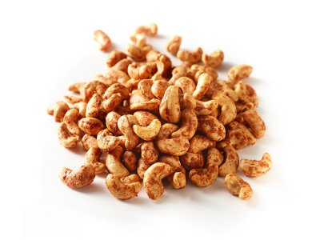

Ingredients
1.Cashew nuts - 1.5 cups (roasted) - Use peanuts to make masala peanuts
2.Besan (Gram Flour) - 1/2 cup
3.Rice Flour - 4 tblsp
4.Garlic - 5 cloves
5.Dry Red Chillies - 5
6.Pepper Powder - 1/2 tsp
7.Turmeric Powder - 1/2 tsp
8.Curry Leaves - 1 spring (optional)
9.Salt - 1 tsp
10.Water - 1 cup (or as needed)
11.Oil - for deep frying
Method
1. You can use store bought roasted cashews for this recipe or dry roast the cashews at home.
2. Soak the garlic cloves and the dry red chillies in the water for about 15 minutes.
3. Grind the garlic and chillies along with the soaked water.
4. To this add the besan, rice flour, turmeric powder, pepper powder and salt and mix nicely. The water already present should be sufficient.
5. Finally add the cashews and mix well. The masala mixture should coat the cashews on all sides.
6. In the mean time heat oil in a kadai for deep frying.
7. Grease your fingers and seperate each cashew while dropping in them in oil.
8. Fry till it turns golden brown. Remove from oil and drain excess oil using a paper towel.
9. You can make this in bulk and store in an airtight container for upto a month. Enjoy as an evening snack with tea on a cold rainy day or while watching a movie.